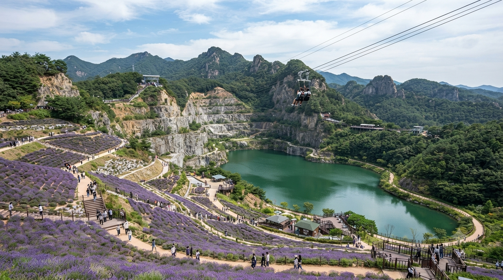

Donghae Smart City
실시간 해양·기상 데이터, 지능형 시민 서비스, 스마트 관광 지도까지.
동해시민과 방문객을 위한 맞춤형 스마트 서비스를 경험해보세요.
원스톱 스마트 시민 서비스
자주 이용하는 행정 및 민원 서비스를 한곳에서 편리하게 이용하세요.
주민등록, 건축, 지방세 등
체육관, 휴양림, 강의실
충전, 가맹점, 인센티브
온라인 신고 및 수수료 결제
시민 소통 제안 채널
생애주기별 지원혜택
체감 18.8°C | 습도 62%
지능형 CCTV 1,420대가 시민 안전을 위해 24시간 실시간 모니터링 중입니다.
접속할 때마다 동해·묵호 현지인 추천 맛집 쇼츠가 랜덤으로 자동 선별되며, 버튼으로 다른 쇼츠를 즉시 뽑아볼 수 있습니다.
※ 브라우저 정책상 최초 로딩 시 음소거(Mute) 상태로 준비되며, 플레이어 하단 스피커 아이콘으로 소리를 켤 수 있습니다.
발한동 메밀전·전병과 묵호진동 물회·회덮밥 등 현지인이 자주 찾는 동해 맛집 코스를 짧은 쇼츠로 확인하세요.
관광 명소 이미지는 ./images/spots/ 폴더에 모아 관리합니다.
마커를 클릭하거나 아래 카드의 '지도 위치' 버튼을 누르면 해당 명소 위치로 이동합니다.
방문 전 해안 파고·기상 상태, 탐방로 개방 여부, 주변 도로·주차 혼잡도를 실시간 화면으로 확인하세요.

강원특별자치도 동해시 촛대바위길 28
동해시 재난안전상황실 및 국가교통정보센터(ITS)·해양수산부 연안 CCTV 연계를 통해 일출·너울성 파도 및 진입로 정체 여부를 사전 확인할 수 있습니다.
민원 상담 및 생활 불편 신고를 24시간 접수합니다.
24시간 자동 실시간 행정 안내
안녕하세요! 동해시 스마트 AI 도우미입니다. 👋
원하시는 행정 민원, 추천 관광지, 주차/교통 정보를 물어보세요!